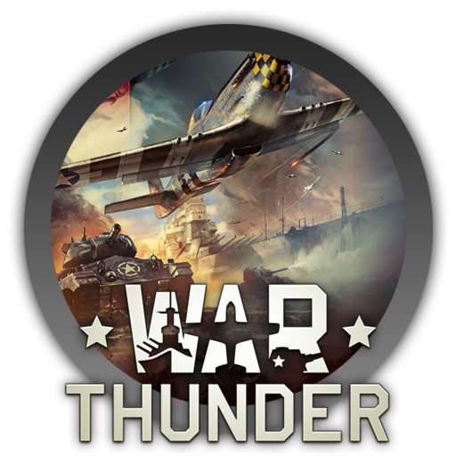
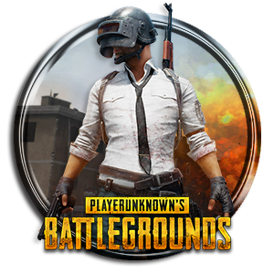

На головну
Онлайн ігри

Counter-Strike: Global Offensive, CS: GO (укр. Контрудар: Глобальний Наступ) — відеогра, шутер від першої особи, розроблена компаніями Valve і Hidden Path Entertainment; остання основна гра в серії ігор Counter-Strike. Вихід на ПК під управлінням Microsoft Windows і Mac та ігрові приставки Xbox 360 і PlayStation 3 відбувся 21 серпня 2012 року. 23 вересня 2014 року гра була випущена на Linux (спочатку в статусі бета-версії).

Fall Guys: Ultimate Knockout (укр. Відбувайли: Повний нокаут) — змагальна багатокористувацька відеогра, розроблена британською студією Mediatonic і видана компанією Devolver Digital. Проект був анонсований в 2019 році в рамках виставки E3. Вихід гри відбувся 4 серпня 2020 року на платформах PC і PlayStation 4.

War Thunder — масова багатокористувальницька онлайн-гра. Присвячена бойовій техніці 20-21 Століття . Проект розробляється і видається компанією Gaijin Entertainment. Станом на 1 травня 2013 проект знаходився у стадії відкритого бета-тесту[1].
Користувачеві пропонується взяти участь в боях на багатьох ігрових мапах. Приділено велику кількість техніки.
Crossout — комп'ютерна розрахована на багато користувачів онлайн-гра в жанрі постапокаліптичного екшену з виглядом від третьої особи. Основу гри складають сесійні PvP-битви на бронеавтомобілях, зібраних самими гравцями. Також одним з основних елементів гри є ринок, торгівля всередині гри та створення деталей на верстатах. Розробником гри є російська студія Targem Games, видавець – компанія Gaijin Entertainment.

PlayerUnknown's BattlegroundsPlayerUnknown's Battlegrounds (PUBG, укр. Поля бою PlayerUnknown-а) — багатокористувацька відеогра, що розробляється корейською студією PUBG Corp. Доступна для Windows у сервісі Steam, iOS і Android, Xbox One і PlayStation 4.
Гра базується на попередніх модифікаціях, які були розроблені для інших ігор Бренданом Гріном, відомим під псевдонімом PlayerUnknown, звідки й назва. PUBG створювалася під впливом кінострічки 2000 року «Королівська битва» і перетворилася згодом на самостійну гру за творчого керування Брендана Гріна.